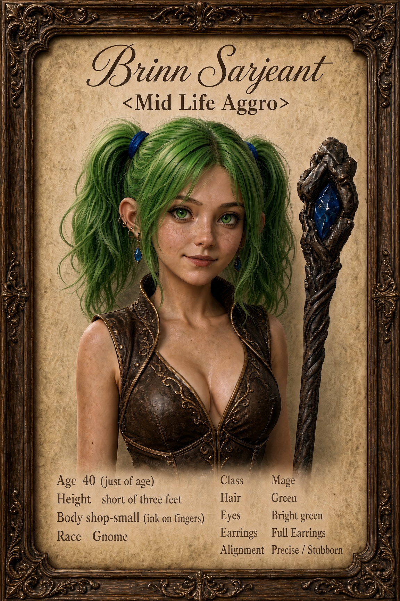

Personality & Roleplay Guide

Personality
René is curious, capable, and determined to be taken seriously. She notices things other people overlook: a loose buckle, an uneven stitch, or a mechanism that makes a noise it shouldn’t. When something catches her interest, her questions can come faster than the answers.
She has a lively, playful side. Around people she trusts, she enjoys a joke, a bit of teasing, and the occasional experiment that seemed perfectly sensible a moment ago. She can laugh at herself—though usually only after she’s finished being annoyed.
René takes pride in doing things well. She measures twice, dislikes sloppy work, and would rather struggle with a problem than have someone assume she can’t manage it. Offer her help kindly and she may accept it. Talk down to her, and you’ll discover just how stubborn a gnome can be.
Gnomeregan’s loss remains close to her heart. She doesn’t share that story freely, and she won’t tolerate cruelty toward the gnomes who stayed behind. Beneath her energy is someone who misses her home and still hopes to return.
Fishing brings out a different René: quieter, patient, and content to let the world carry on around her. Until she sets the hook too early, anyway.
How she speaks
René speaks clearly and fairly quickly when excited. She uses practical words from the workshop—gears, springs, sparks, measure, and adjustment—when they fit naturally. Her humor is dry, occasionally mischievous, and sometimes aimed at her own mistakes.
“Hello! René Sarjeant. Is that yours? The little mechanism there—I’ve never seen one quite like it.”
“I appreciate the thought, but I’ve nearly got it. If I haven’t in five minutes, you may ask again.”
“Well. That was considerably more fire than I intended.”
“Paxton says I pull too soon. Today I’m going to prove him wrong… quietly.”
“There are people still down there. I’d rather not hear them spoken of as monsters.”